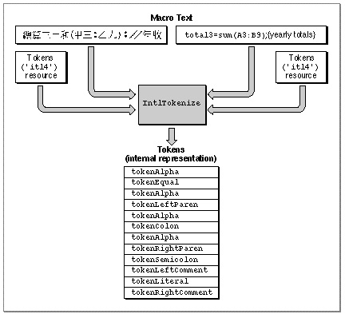
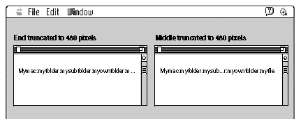

Legacy Document
Important: The information in this document is obsolete and should not be used for new development.
Important: The information in this document is obsolete and should not be used for new development.


Converting Text
The third principal use for the Script Manager is in converting text from one form to another, for two specific purposes: tokenization and transliteration. The routines described in this section are used by specialized applications only. You can use these Script Manager routines to
Most text-processing applications have no need to perform either of these tasks. However, if your program needs to evaluate programming statements or logical or mathematical expressions in a script-independent fashion, you may want to use the Script Manager's tokenization facility. If your program performs phonetic conversion, for text input or for any other purpose, you may want to use the Script Manager's transliteration facility.
- lexically convert text of the current script system into a series of language-independent tokens (tokenization)
- phonetically convert text of one subscript into text of another subscript within the same script system (transliteration)
Tokenization
Programs that parse structured text expressions (such as compilers, assemblers, and scripting-language interpreters) usually assign sequences of characters to categories called tokens. Tokens are abstract entities that stand for names, operators, and quoted literals without making assumptions that depend on a particular writing system.The Script Manager provides support for this conversion, called tokenization. Each script system's international tokens resource (type
'itl4') contains tables of token information used by the Script Manager'sIntlTokenizefunction to identify the elements in an arbitrary string of text and convert them to tokens. The token stream created byIntlTokenizecan be used as input to a compiler or interpreter, or to an expression evaluator such as might be used by a spreadsheet or database program.The
IntlTokenizefunction allows your application to create a common set of tokens from text in any script system. For example, a whitespace character might have different character-code representations in different script systems. TheIntlTokenizefunction can assign the tokentokenWhiteto any whitespace character, thus removing dependence on any character-encoding scheme.When you call
IntlTokenize, you pass it the source text to interpret.IntlTokenizeparses the text and returns a list of the tokens that make up the text. Among the token types that it recognizes are whitespace characters; newline or return characters; sequences of alphabetic, numeric, and decimal characters; the end of a stream of characters; unknown characters; alternate digits and decimals; and many fixed token symbols, such as open parentheses, plus and minus signs, commas, and periods. See page 6-58 for a complete list of recognized tokens and their defined constants.
IntlTokenizecan return not only a list of the token types found in your text but also a normalized copy of the text of each of the tokens, so that the content of your source text is preserved along with the tokens generated from it.Figure 6-3 illustrates the process that occurs when
IntlTokenizeconverts text into a sequence of tokens. It shows that very different text from two separate script systems can result in the same set of tokens.Figure 6-3 The action of
IntlTokenize Because it uses the tokens resource belonging to the script system of the text being analyzed,
IntlTokenizeworks on only one script run at a time. However, one way to process multiscript text is to make successive calls toIntlTokenizeand append the results of each to the token list, thus building a single token stream from multiple calls.
The rest of this section introduces the data structures used by
- Note
- The
IntlTokenizefunction does not provide complete lexical analysis; it returns a simple, sequential list of tokens. If necessary, your application can then process the output ofIntlTokenizeat a more sophisticated lexical or syntactic level.
IntlTokenize, discusses specific features and how it handles specific types of text, and gives an example.Data Structures
When you callIntlTokenize, you supply it with a pointer to a token block record, a data structure that you have allocated. The token block record has a pointer to your source text and pointers to two other buffers you have allocated--one to hold the list of token records thatIntlTokenizegenerates and the other to hold the string representations of those tokens, if you choose to have strings generated. See Figure 6-4.
IntlTokenizefills in the token list and the string list, updates information in the token block record, and returns the information to you.Figure 6-4
IntlTokenizedata structures (simplified)Delimiters for Literals and Comments
Your application may specify up to two pairs of delimiters each for quoted literals and for comments. Quoted literal delimiters consist of a single symbol, and comment delimiters may be either one or two symbols (including the newline character for notations whose comments automatically terminate at the end of a line). Each delimiter is represented by a token, as is the entire literal between the opening and closing delimiters--except when the literal contains an escape character; see "Escape Character" (next).Limited support exists for nested comments. Comments may be nested if so specified by the
doNestflag, with one restriction that must be strictly observed to preventIntlTokenizefrom malfunctioning: nesting is legal only if both the left and right delimiters for the comment token are composed of two symbols each. If your application specifies two different sets of comment delimiters, then thedoNestflag always applies to both.
- IMPORTANT
- When using nested comments specified by the
doNestflag, test thoroughly to ensure that the requirements ofIntlTokenizeare met.
Escape Character
The characters that compose literals within quotations and comments are normally defined to have no syntactic significance; however, the escape character within a quoted literal signals that the following character should not be treated as the closing delimiter. Outside of the limits of a quoted literal, the escape character has no significance and is not recognized as an escape character.For example, if the backslash "\" (token type =
tokenBackSlash) is defined as the escape character, theIntlTokenizefunction would consider it to be an escape character in the following string, and would not consider the second quotation mark to be a closing delimiter:
"This is a quote \" within a quoted literal"In the following string, however,IntlTokenizewould not consider the backslash to be an escape character, and therefore would consider the first quotation mark to be an opening delimiter:
This is a backslash \" preceding a quoted literal"Alphanumeric Tokens
TheIntlTokenizefunction allows you to specify that numeric characters do not have to be considered numbers when mixed with alphabetic characters. If a flag is set, alphabetic sequences may include digits, as long as first character is alphabetic. In that case the sequenceHighway61would be converted to a single alphabetic token, instead of the alphabetic tokenHighwayfollowed by the number61.Alternate Numerals
Some script systems have not only Western digits (that is, the standard ASCII digits, the numerals 0 through 9), but also their own numeral codes.IntlTokenizerecognizes these alternate numerals and constructs tokens from them, such astokenAltNumandtokenAltReal.String Generation
To preserve the content of your source text as well as the tokens generated from it, your application may instructIntlTokenizeto generate null-terminated, even-byte-boundaried Pascal strings corresponding to each token.IntlTokenizeconstructs the strings according to these rules:
The tokens resource includes a string-copy routine that performs the necessary string normalization.
- If the token is anything but alphabetic or numeric,
IntlTokenizecopies the text of the token verbatim into the Pascal string.- If the token represents non-Roman alphanumeric characters,
IntlTokenizecopies the characters verbatim into the Pascal string.- If the token represents Roman alphabetic characters,
IntlTokenizenormalizes them to standard ASCII characters (such as by changing 2-byte Roman to 1-byte Roman) and writes them into the Pascal string.- If the token represents numeric characters--even if the script system uses an alternate set of digits--
IntlTokenizenormalizes them into standard ASCII numerical digits, with a period as the decimal separator, and creates a string from the result. This allows users of other script systems to transparently use their own numerals or Roman characters for numbers or keywords.
Appending Results
You can make a series of calls toIntlTokenizeand append the results of each call to the results of previous calls. You can instructIntlTokenizeto use the output values for certain parameters from each call as input values to the next call. At the end of your sequence of calls you will have--in order--all the tokens and strings generated from the calls toIntlTokenize.Appending results is the only way to use
IntlTokenizeto parse a body of text that has been written in two or more different script systems. BecauseIntlTokenizecan operate only on a single script run at a time, you must first divide your text into script runs and pass each script's character stream separately toIntlTokenize.Example
Here is an example of how theIntlTokenizefunction breaks text into segments that that can be processed in a way that is meaningful in a particular script system. The source text is identical to that shown in Figure 6-3 on page 6-39. Assume that you send this programming-language statement toIntlTokenize:
total3=sum(A3:B9);{yearly totals}IntlTokenizemight convert that into the following sequence of tokens and token strings:
Token Token string tokenAlpha 'total3' tokenEqual '=' tokenAlpha 'sum' tokenLeftParen '(' tokenAlpha 'A3' tokenColon ':' tokenAlpha 'B9' tokenRightParen ')' tokenSemicolon ';' tokenLeftComment '{' tokenLiteral 'yearly totals' tokenRightComment '}' This token sequence could then be processed meaningfully by an expression evaluator. If the statement had been created under a different script system, in which comment delimiters, semicolons, or equality were represented with different character codes, the resulting token sequence would still be the same and could be evaluated identically--although the strings generated from the tokens would be different.
The
IntlTokenizefunction is described further on page 6-92.Transliteration
The Script Manager provides support for transliteration, the automatic conversion of text from one form to another within a single script system. In the Roman script system, transliteration simply means case conversion. In Japanese, Chinese, and Korean script systems, it means the phonetic conversion of characters from one subscript to another.The
TransliterateTextfunction performs the conversions. Tables that control transliteration for a 1-byte script system are in its international string-manipulation ('itl2') resource; the tables for a 2-byte script system are in the script's transliteration ('trsl') resource. This illustrates the difference in the meaning of transliteration for the two types of script systems: case conversion information is in the string-manipulation resource, whereas information needed for phonetic conversion is in the transliteration resource. The transliteration resource is available to all script systems, although currently no 1-byte script systems make use of it.Transliteration here does not mean translation; the Macintosh script management system cannot translate text from one language to another. Nor does it include context-sensitive conversion from one subscript to another; that can be accomplished with an input method. See, for example, the discussions of input methods in the chapters "Introduction to Text on the Macintosh" and "Text Services Manager" in this book. Transliteration can, however, be an initial step for those more complex conversions:
The Script Manager defines two basic types of transliteration you can perform: conversion to Roman characters, and conversion to a native subscript within the same non-Roman script system. Within those categories there are subtypes. For instance, in Roman text, case conversion can be either to uppercase or to lowercase; in Japanese text, native conversion can be to Romaji, Hiragana, or Katakana.
- Within the Japanese script system, you can transliterate from Hiragana to Romaji (Roman) and from Romaji to Katakana, and vice versa. You cannot transliterate from Hiragana to Kanji (Chinese characters). However, transliteration from Romaji to Katakana or Hiragana could be an initial step for an input method that would complete the context-sensitive conversion to Kanji.
- Within the (traditional) Chinese script system, you can transliterate from the Bopomofo or Zhuyinfuhao (phonetic) subscript to Roman, and vice versa. You cannot transliterate from Zhuyinfuhao to Hanzi (Chinese characters). However, transliteration from Zhuyinfuhao to Pinyin could be an initial step for an input method that would complete the context-sensitive conversion to Hanzi.
- Within the Korean script system, you can transliterate from Roman to Jamo, from Jamo to Hangul, from Hangul to Jamo, and from Jamo to Roman. It is therefore possible to transliterate from Hangul to Roman and from Roman to Hangul by a two-step process. It is not possible to transliterate from Hangul into Hanja (Chinese characters). Transliteration from Jamo to Hangul is used by the input method supplied with the Korean script system; that transliteration is sufficient when Hanja characters are not used. To include Hanja characters requires additional context-sensitive processing by the input method.
You can specify which types of text can undergo conversion. For example, in Japanese text you can, if you want to, limit transliteration to Hiragana characters only. Or you can restrict it to case conversion of Roman characters only.
Not all combinations of transliteration are possible, of course. Case conversion cannot take place in scripts or subscripts that do not have case; transliteration from one subscript to another cannot take place in scripts that do not have subscripts.
Transliteration is not perfect. Typically, it gives a unique result within a 2-byte script, although it may not always be the most phonetic or natural result. Transliterations may be incorrect in ambiguous situations; by analogy, in certain transliterations from English "th" could refer to the sound in the, the sound in thick, or the sounds in boathouse.
Figure 6-5 shows some of the possible effects of transliteration. Each string on the right side of the figure is the transliterated result of its equivalent string on the left.
Figure 6-5 The effects of transliteration
- Roman characters can be transposed from uppercase to lowercase and vice versa--even if they are embedded in text that also contains Kanji.
- One-byte Roman characters can be converted to 2-byte Roman characters. (The glyphs for 2-byte Roman characters are typically larger and spaced farther apart, for better appearance when interspersed with ideographic glyphs.)
- Katakana can be converted to Hiragana.
- Hiragana can be converted to 1-byte Roman characters.
 When you call
TransliterateText, you specify a source mask, a target format, and a target modifier. The source mask specifies which subscript or subscripts represented in the source text should be converted to the target format. The target modifier provides additional formatting instructions. For example, in Japanese text that contains Roman, Hiragana, Katakana, and Kanji characters, you could use the source mask to limit transliteration to Hiragana characters only. You could then use the target format to specify conversion to Roman, and you could use the target modifier to further specify that the converted text become uppercase.For all script systems, there are three currently defined values for source mask, with the following assigned constants:
Source mask constant Value Explanation smMaskAscii 1 Convert from Roman text smMaskNative 2 Convert from text native to current script smMaskAll -1 Convert from all text To specify that you want to convert only Roman characters, use
smMaskAscii. To convert only native characters, usesmMaskNative. Use thesmMaskAllconstant to specify that you want to transliterate all text. "Roman text" is defined as any Roman characters in the character set of a given script system. In most cases, this means the low-ASCII Roman characters, but--depending on the script system--it may also include certain characters in the high-ASCII range whose codes are not used for the script system's native character set, and it may include 2-byte Roman characters in 2-byte script systems. The definition of "native text" is also script-dependent.The 2-byte script systems recognize the following additional values for source mask:
The low-order byte of the
targetparameter is the format; it determines what form the text should be transliterated to. For all script systems, there are two currently supported values for target format, with the following assigned constants:The 2-byte script systems recognize the following additional values for target format:
The high-order byte of the
targetparameter is the target modifier; it provides additional formatting instructions. All script systems recognize these values for target modifier, with the following assigned constants:
Target modifier constant Hex. value Explanation smTransLower $4000 Target becomes lowercase smTransUpper $8000 Target becomes uppercase For example, for
TransliterateTextto convert all the characters in a block of text to 1-byte Roman uppercase, the value ofsrcMaskissmMaskAlland the target value issmTransAscii1+smTransUpper. To convert only those characters that are already (1-byte or 2-byte) Roman, the value ofsrcMaskissmMaskAscii1+smMaskAscii2.The
TransliterateTextfunction is described further on page 6-98.
- Note
- For uppercasing or lowercasing Roman text in general, use
UppercaseTextorLowercaseText. Because the performance ofTransliterateTextis slower, you may rarely want to use its case-changing capabilities in Roman text.